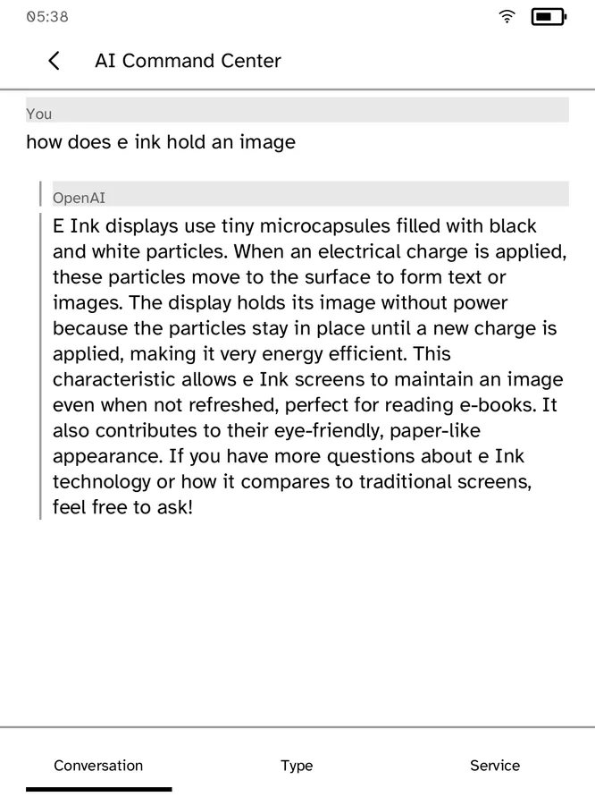
Cobalt
Investigate a path for installing and distributing third-party apps on an existing Kobo.
Showing records 1–28; filtering loads all pages in this category.

Investigate a path for installing and distributing third-party apps on an existing Kobo.
Use an alternative document reader on a Kobo that meets upstream conditions.
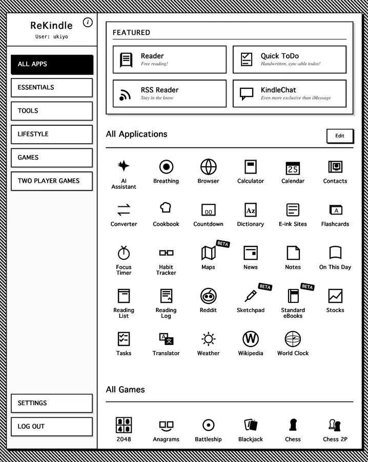
Investigate an alternative software experience for an older Kindle.

Investigate a path to third-party software access on a supported reMarkable.
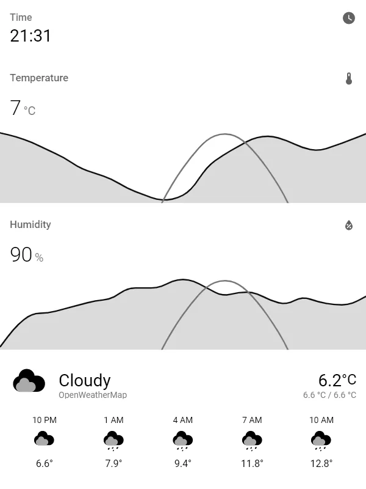
Render Home Assistant pages on a server and use an old Kindle only for display.
Evaluate launching third-party programs through file events on an older Kobo.
 Fallback
FallbackTurn an old Kindle into an information display with switchable content.
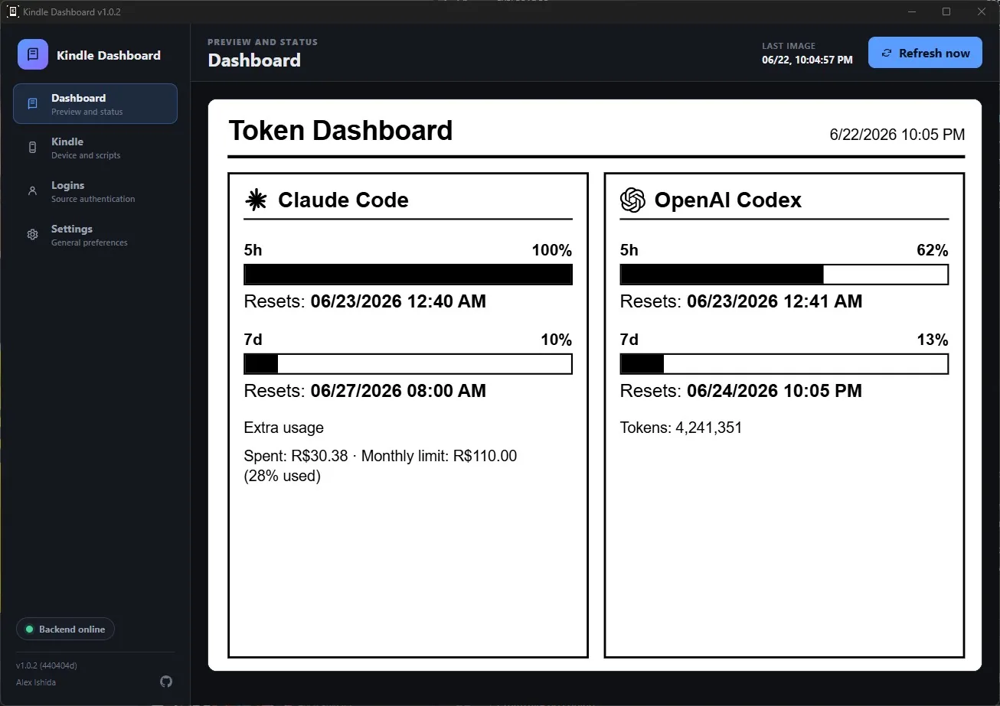
Use an old Paperwhite as a desktop information screen displaying AI tool usage.
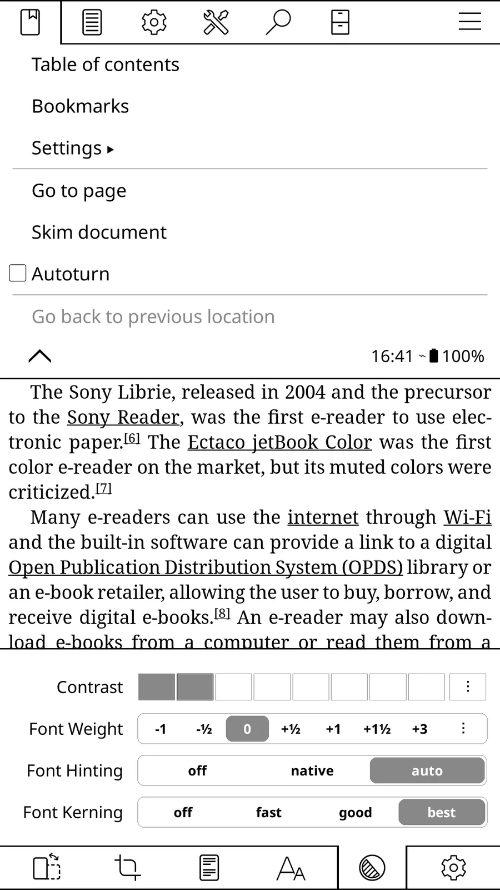
Extend multiformat reading, typography and synchronization on old e-readers.
FallbackAdd an accessible entry point for scripts and custom actions on an older Kobo.
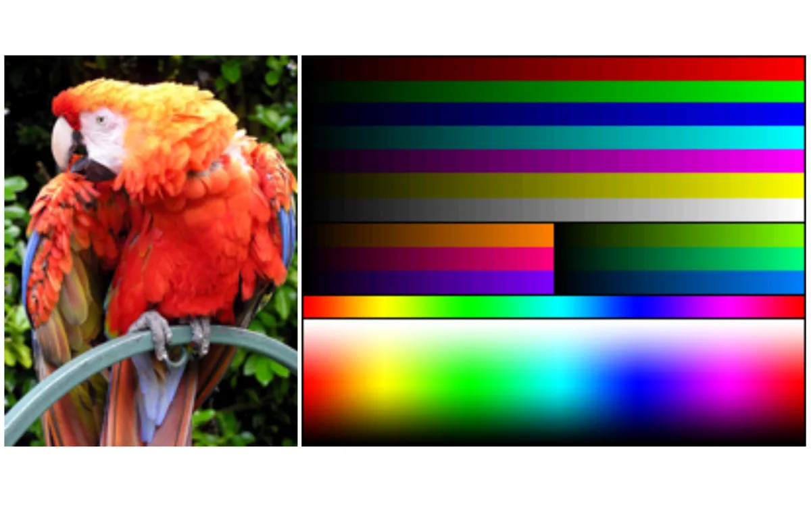
Investigate infrastructure for developing or running third-party apps on an existing reMarkable.
FallbackEvaluate using an older Kobo for online manga reading.
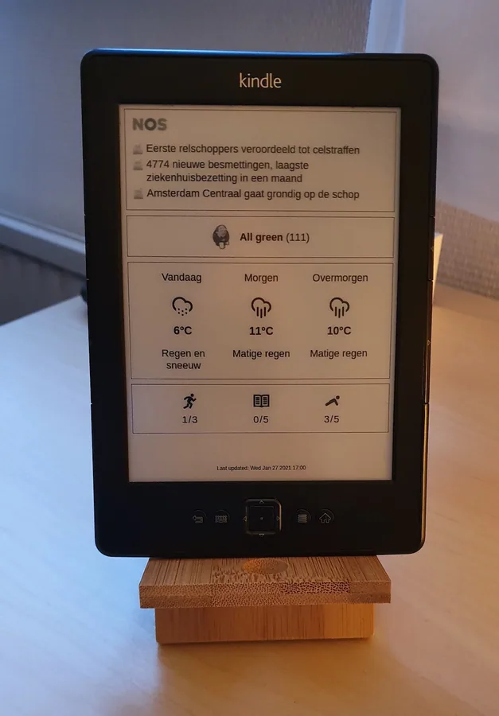
Evaluate an idle Kindle 4 NT as an always-on information display.

Research repurposing retired electronic shelf labels as low-power information displays
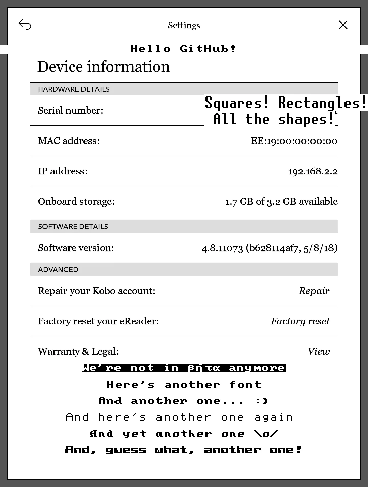
Provide low-level e-ink drawing tools for information-display projects on old readers.
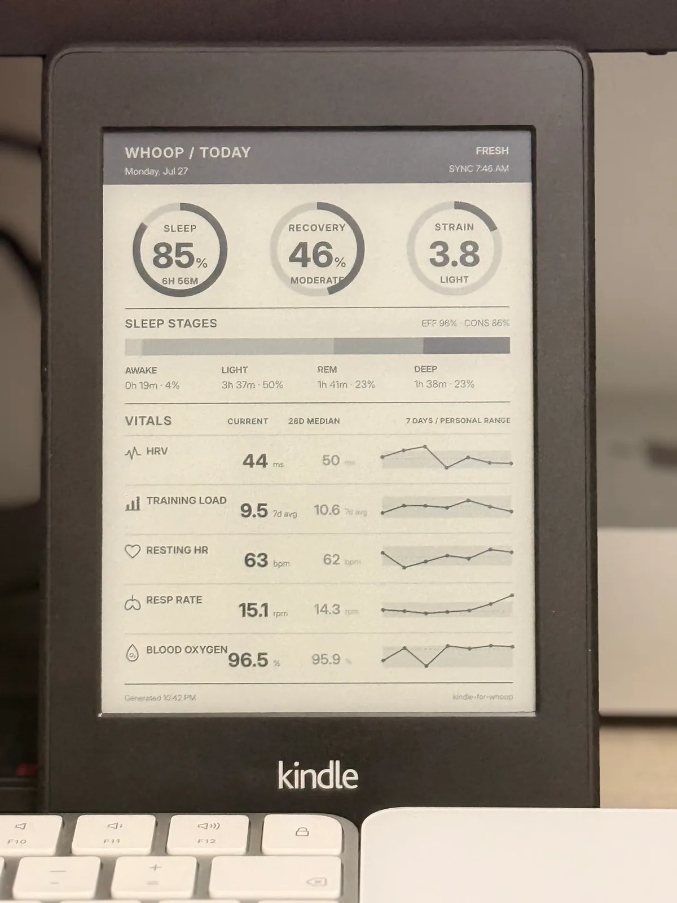
Turn an old Kindle into a WHOOP health-data display, with documentation for AI-assisted setup.
Use an old Kindle as a lightweight chat and messaging endpoint for OpenAI-compatible APIs.
FallbackManage third-party packages on an older Kindle that meets upstream prerequisites.
FallbackEvaluate adding an Entware package environment to an existing reMarkable.
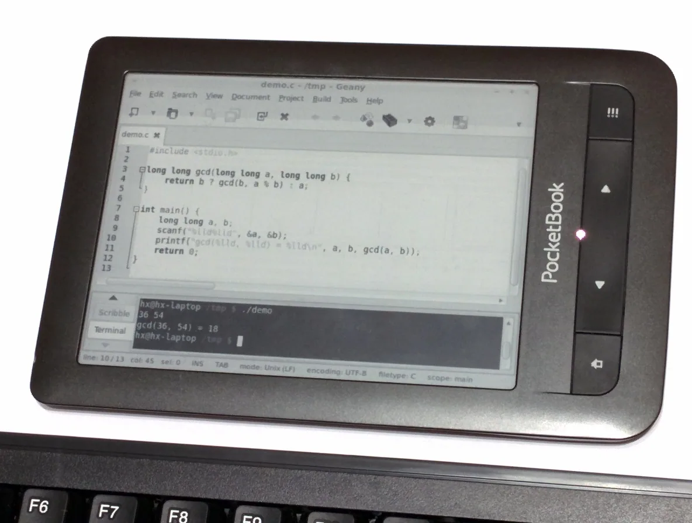
Evaluate an idle PocketBook as an auxiliary computer display.
Provide a prerequisite unlock route for installing community software on supported Kindles.

Evaluate an older Kobo as a low-distraction text-entry terminal.
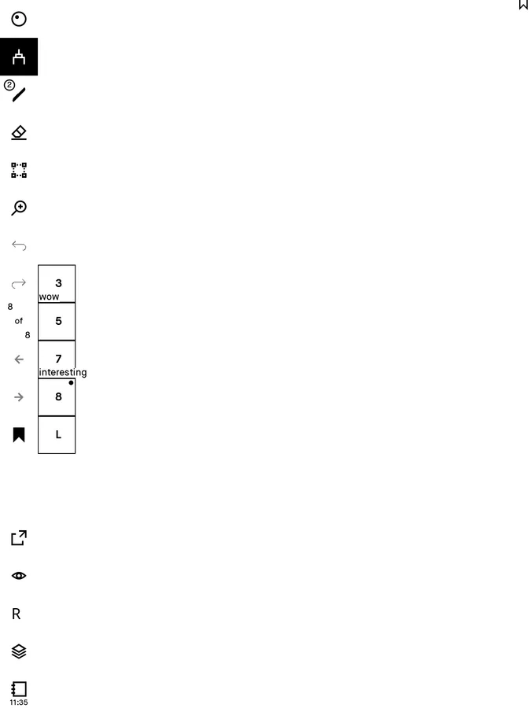
Evaluate adding the upstream-described functionality to an older reMarkable.
FallbackA Hackaday project documents high-voltage drive rails, an adapter PCB and ESP experiments for 39-pin e-paper panels, including a successful black-and-white output log.
FallbackInvestigate a free-software alternative path for an older Kobo.
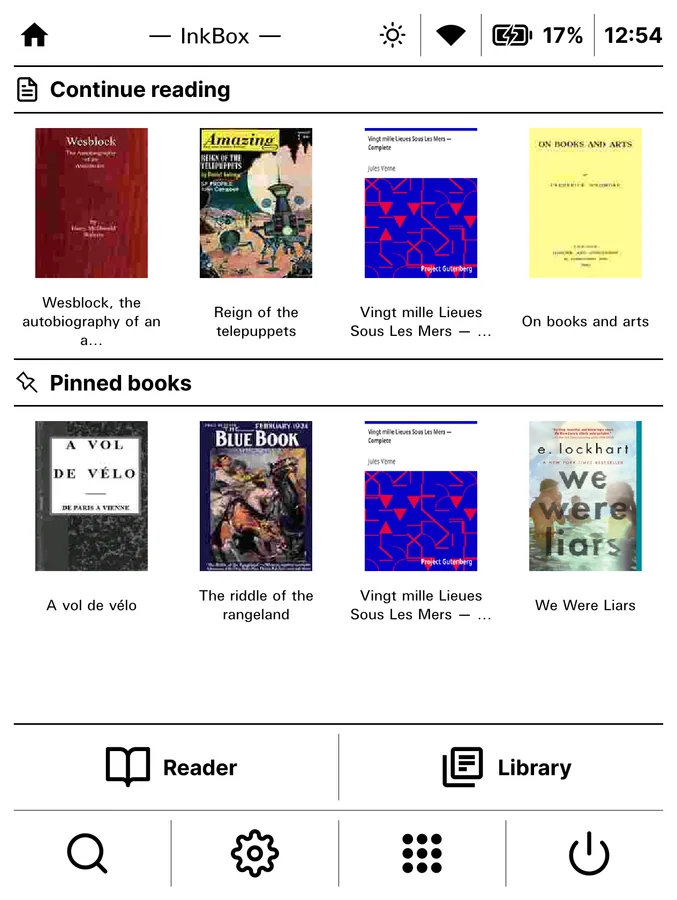
Evaluate an alternative reader on an existing Kobo.
 Fallback
FallbackThe author plans to let a Pico rewrite EPUB/PDF files on an SD card so an old Sony PRS-700 can display changing text; the work remains at research and parts-gathering stage.
The goal was a Raspberry Pi interface for a surplus Kindle panel. The author records that two PCB revisions contained errors and were unusable, then switched to another project.
Remove a filter or try another device/model term.